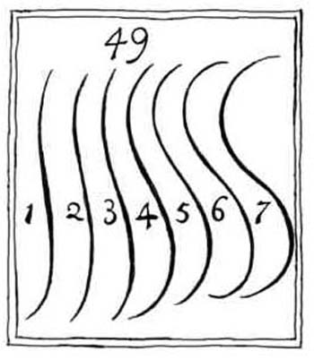
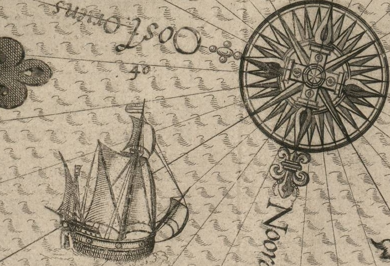
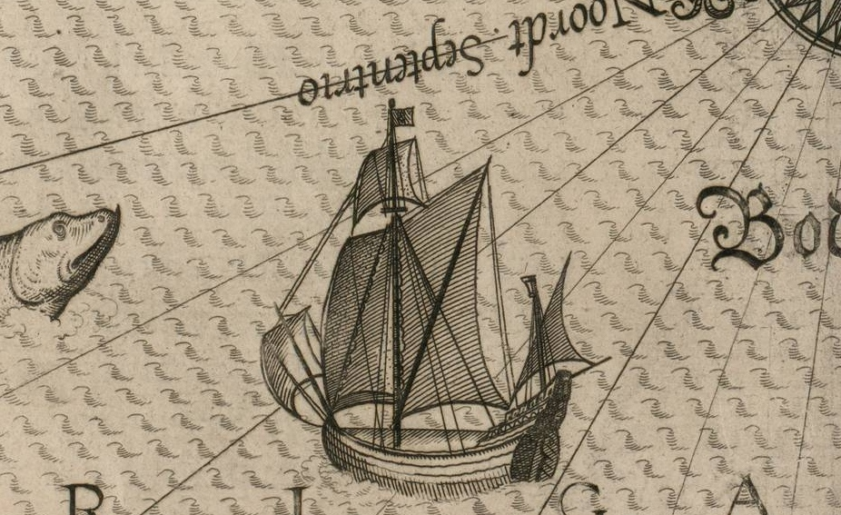
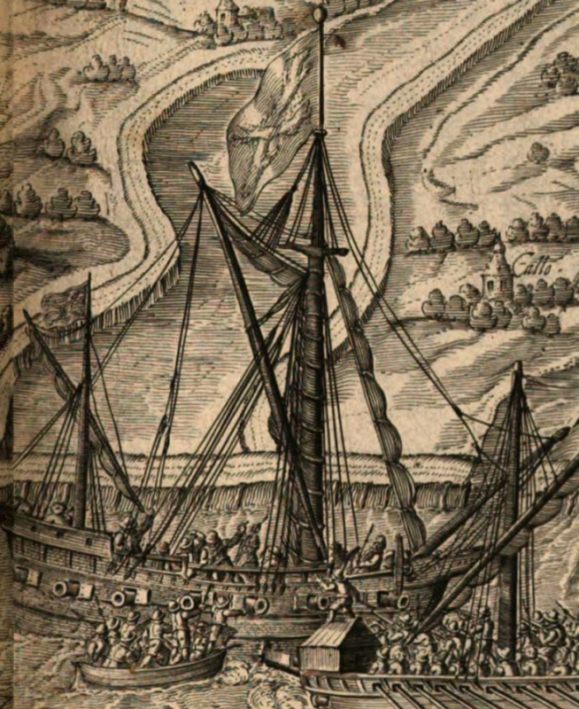

Итак, выше мы установили, что кромстеры появились в начале семидесятых годов шестнадцатого века в Нидерландах.
Изображение захвата кромстера, адмиральского корабля из Антверпена, Черной Галерой из Дордрехта в 1600 году (Jan Janszoon Orlers and Henrick van Haestens) (кликабельно)
Англия вплоть до сражения с Непобедимой Армадой в 1588 году не проявляла особого интереса к этим кораблям, хотя некоторые офицеры английского военного флота, принимавшие участие в боевых действиях в том регионе, были хорошо знакомы с ними. Один из них, Джон Монтгомери, даже включил сведения о кромстерах в свой неопубликованный трактат. Однако лишь начиная с 1588 года англичане всерьез поставили вопрос об оснащении своего военного флота кораблями этого типа. Закрепление испанского флота в Слёйсе сделало актуальным приобретение для флота Англии высокоманевренных, мелкосидящих судов для предотвращения попыток герцога Пармы осуществить высадку на побережье Кента, на чем настаивал король Филипп II. Именно тогда, в декабре 1588 года, и были заказаны четыре кромстера, о которых мы написали в конце предыдущего поста. Несмотря на то, что предназначены были эти корабли для действий в прибрежной зоне, их вооружение позволяет относить их к «большим кораблям» (great ships). (Напомним, что первое официальное разделение кораблей на ранги в английском флоте произошло в 1604 году. До этого в категорию great ships выделялись лишь каракки, а ближе к концу XVI века – галеоны). Мы уже говорили о достаточно мощном артиллерийском вооружении кромстеров. Впрочем, известный морской историк Корбетт пишет, что предназначенное для кромстеров тяжелое вооружение никогда не было на них установлено. Вот его слова:
Seeing that they were designed for coast defence a very heavy armament was originally specified for them, viz. eight eighteenpounder culverins, six nine-pounder demi-culverins, and two five-pounder sakers. Eventually they were armed much more lightly with nine-pounders and smaller pieces. It is probable that as the danger of a galley attack faded away, it was found that with a lighter armament they could still be put to excellent use as cruisers.
Поскольку они [кромстеры] были предназначены для береговой обороны, первоначально предусмаотрено было установить на них очень тяжелое вооружение, а именно: 8 восемнадцатифунтовых кулеврин, 6 девятифунтовых полукулеврин, и 2 пятифунтовых сакры. В действительности, они были вооружены значительно легче, девятифунтовыми и более мелкими орудиями. Это произошло, видимо, потому, что угрозы галерных атак отошли на второй план, а более легкое вооружение позволяло использовать кромстеры в роли крейсеров.
Corbett, Julian Stafford, Sir, The successors of Drake , 1900 , p.56-57
Это пожалуй вся информация, которой мы располагаем относительно английских кромстеров. Но, к счастью, к этому времени относится большое количество источников, которые дают нам сведения о кромстерах нидерландских. Английский морской историк R. Morton Nance, внимательно изучивший эти источники, считает, что голландский кромстер – это разновидность кораблей типа хой (hoy), от которых кромстер отличается лишь закругленным форшевнем, по-голландски - cromsteven. Но у хоя того времени форштевень уже был закруглен, точнее. завален в корму, в форме буквы С. Morton Nance считает, что в отличие от хоя, форштевень кромстера имел двойной изгиб, в форме буквы S, или точнее, в форме «линий красоты» Уильяма Хогарта

«Линии красоты» («Line of Beauty»), введенные Уильямом Хогартом в его книге «Анализ красоты» («The Analysis of Beauty») (1753)
Мы встречаем изображения кромстеров на картах известного голландского картографа и мореплавателя Луки Вагенера, изданных в 1586 году. Вот пара из этих изображений


WAGENAER. Lucas Jansz Pars prima. Speculum nauticum super navigatione Maris Occidentalis,... (1586)
Манера художника изображать корабли с кормового ракурса не позволяет нам оценить форму форштевня и отделить кромстеры от хоев. Зато мы можем очень хорошо разглядеть их такелаж и паруса. Прямой марсель, шпринтовый парус на гроте, блинд на бушприте и латинское вооружение бизани является характерным признаком для кромстеров, как, впрочем, и для хоев.
Значительно больше информации о кромстерах мы можем почерпнуть из трактата Орлерса и ван Хастенса, посвященного победам статхаудера Нидерландов Морица Нассауского, занявшего этот верховный пост после гибели Вильгельма Оранского. Успешные военные операции нового главнокомандующего на суше и совместные действия англо-голландского флота на море укрепили независимость Соединенных провинций. Трактат, прославляющий эти победы, (Jan Janszoon Orlers and Henrick van Haestens, Beschrivinghe ende af-beeldinge van alle de Victorien so te Water als te Lande, die Godt Almachtich de Eedele Hooch-mogende Heeren Staten der vereenichde Neder-landen verleent heeft, duer het wijs ende douck beleyt des Hooch-ghebooren Fursts Maurits van Nassau … Leyden, 1610) содержит замечательные гравюры, которые дают возможность внимательно рассмотреть характерные детали кораблей той эпохи. В тексте трактата ставится знак равенства между кромстерами (cromsteven), хоями (heude) и смэками, или, как называет их Бутаков, шмаками (smacseyl) В тексте кромстер описывается так:
крупный узкий хой или смэксейл, который у них называется кромстер, такой необыкновенно мощный, что у жителей Зеландии нет других равных ему; грузоподъемность его оценивается в 180 тонн или больше, вооружен 16 или 17 бронзовыми орудиями, а также железными пушками и камнеметами, расположенными в три яруса, один над другим.
Последние слова в этом описании не означают, что кромстер был трехпалубным кораблем.
Выделим для удобства изображение кромстера из иллюстрации, приведенной в начале поста

Мы видим здесь семь орудий вдоль борта, в отличие от объявленных восьми, трудно разглядеть носовое погонное орудие, не показаны и вертлюжные пушки, которые, будучи размещенными на планшире и кормовой надстройке, должны были изображать второй и третий ярус артиллерии, заявленный в описании. Форштевень действительно закруглен и вместе с шпироном в носу дает представление о той самой «линии красоты», которую мы упоминали выше.
Почетное место нидерландские кромстеры заняли в боях против галер Федерико Спинолы в самом начале XVII века, но об этом мы расскажем в следующий раз.